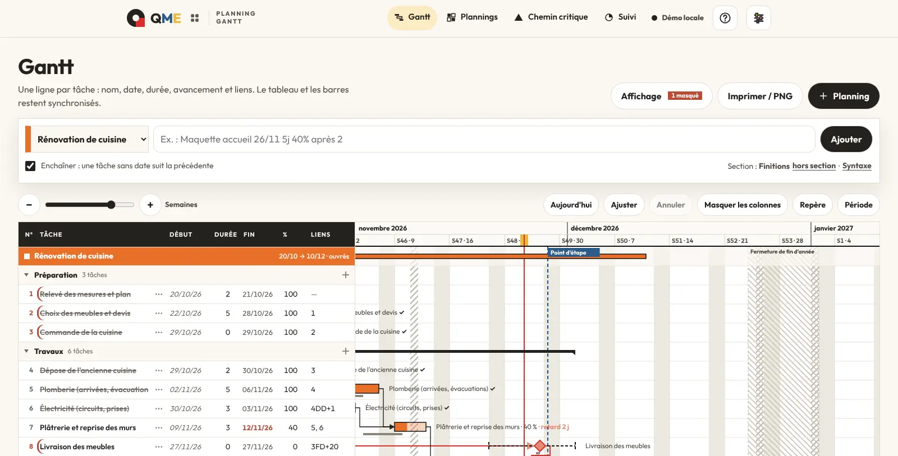
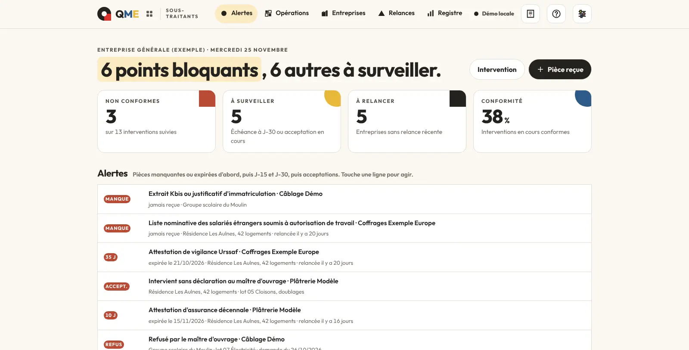
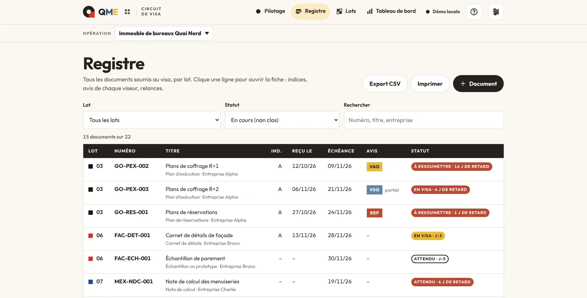
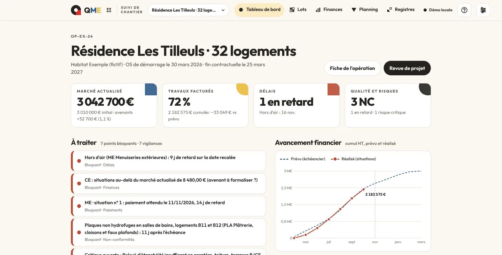
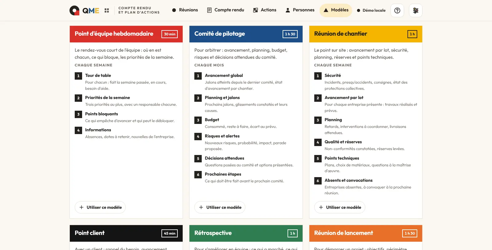
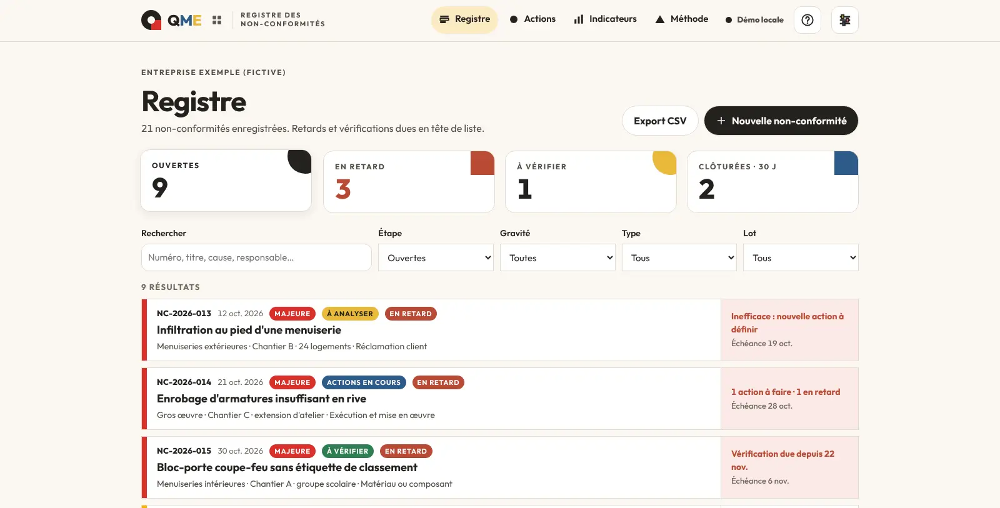
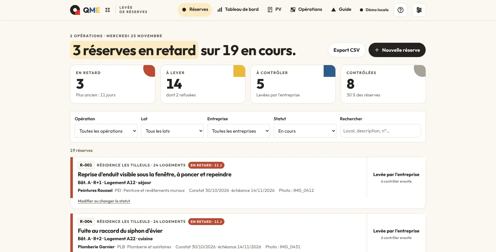
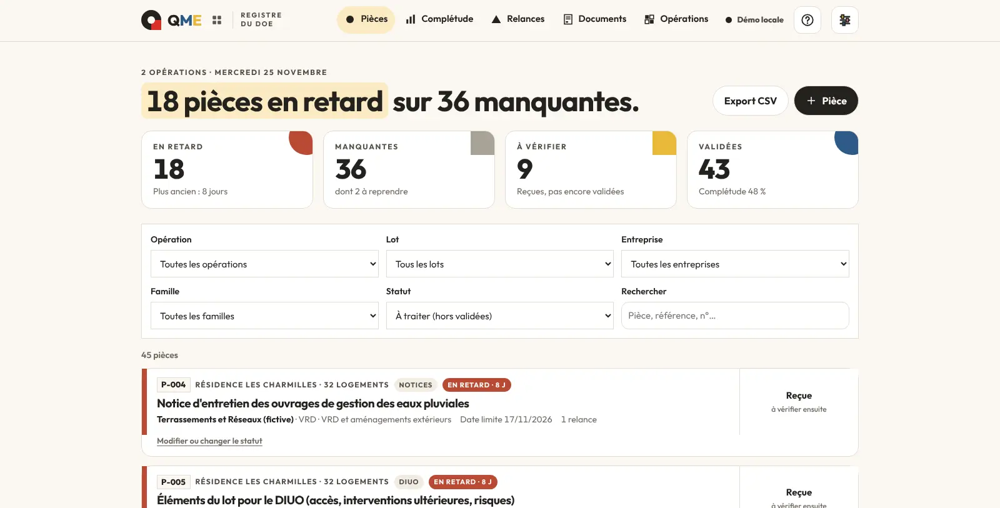

Concept pour la maîtrise d'œuvre et les entreprises générales · pack prêt à l'emploi
Une opération suivie de la préparation à la réception.
Huit outils en ligne, déjà prêts, conçus par un ingénieur pour le suivi des opérations de bâtiment : le planning, les sous-traitants, les visas, le suivi par lot, les comptes rendus, les non-conformités, les réserves et le DOE. Chacun s'ouvre tout de suite en démo, sans inscription, et l'ensemble peut être adapté sur mesure à votre façon de travailler.
Chaque démo ouvre une opération fictive (entreprises, lots, documents inventés), sans inscription. Elle reste dans votre navigateur et n'envoie rien. Toutes les données affichées sur cette page sont fictives.
Le quotidien
Un tableur pour le planning, un autre pour les visas, les réserves dans un document par entreprise, le DOE dans la messagerie. Aucun ne parle aux autres.
Ce que cela coûte
Des réserves non levées des mois après la réception, un DOE incomplet qui retarde le solde, une attestation de sous-traitant périmée découverte au moment de payer.
Ce que fait le pack
Il tient chaque registre avec ses échéances, met les retards en tête de liste, prépare les relances et imprime les documents à transmettre.
Le déroulé d'une opération, en huit outils
Dans l'ordre où ils servent. Chaque capture vient de la démo réelle de l'outil.
- 01Planning
- 02Sous-traitants
- 03Visas
- 04Suivi par lot
- 05Comptes rendus
- 06Non-conformités
- 07Réserves
- 08DOE
01 · Préparation
Le planning de l'opération, chemin critique compris
Les tâches s'écrivent en une ligne, les liens se calculent, le retard d'une tâche se répercute sur les suivantes.
- Jours ouvrés et fériés, jalons, liens fin-début et décalages
- Chemin critique et marge de chaque tâche
- Avancement réel comparé au planning de référence

02 · Préparation
Des sous-traitants acceptés et en règle
Chaque entreprise avec ses pièces de vigilance et leur date de fin, sur toutes vos opérations.
- Attestations URSSAF, Kbis, assurance décennale : alerte avant expiration
- Acceptation par le maître d'ouvrage suivie pour chaque intervention
- Relance préparée, entreprise par entreprise

03 · Études d'exécution
Le circuit de visa, avec ses délais
Tous les documents soumis au visa, par lot et par indice, avec l'échéance contractuelle calculée.
- Avis VSO, VAO, REF par viseur et nouvel indice attendu
- Documents en retard et viseurs à relancer en tête de liste
- Export CSV et impression du registre

04 · Chantier
Chaque lot suivi, du marché au solde
Avenants, situations de travaux, jalons recalés et points bloquants réunis par lot.
- Marché actualisé et travaux facturés comparés au prévisionnel
- Jalons contractuels recalés et retards signalés
- Revue de projet préparée à partir des données saisies

05 · Chantier
Des réunions de chantier qui finissent en actions datées
Un ordre du jour type « réunion de chantier », un compte rendu prêt à diffuser, des actions suivies d'une réunion à l'autre.
- Sécurité, avancement par lot, planning, qualité et réserves, points techniques
- Actions ouvertes reportées automatiquement à la réunion suivante
- Absents et entreprises à convoquer notés

06 · Chantier
Les non-conformités traitées jusqu'au bout
Du constat à la clôture : analyse des causes, actions correctives, vérification de leur efficacité.
- Gravité, lot, échéance et retards en tête de liste
- Méthode intégrée : 5 pourquoi, familles de causes
- Indicateurs prêts pour une revue ou un audit

07 · Réception
OPR et levée des réserves, entreprise par entreprise
Chaque réserve localisée, attribuée, datée, levée par l'entreprise puis contrôlée.
- Réserves en retard, à lever, à contrôler, contrôlées
- Tableau de bord par lot et par entreprise
- Liste à transmettre et procès-verbal de levée prêts à imprimer

08 · Réception
Un DOE complet, sans relances à la main
Les pièces attendues par lot et par entreprise, leur état, les relances et le bordereau de transmission.
- Notices, plans, fiches produits, éléments du DIUO
- Complétude par entreprise et pièces à reprendre
- Courrier de relance prérempli et bordereau imprimable

Prêt à l'emploi, ou sur mesure
Les outils sont prêts : ils s'ouvrent en ligne, au bureau sur ordinateur comme sur téléphone au chantier, et les données sont synchronisées. Si votre organisation demande autre chose, je le construis pour vous.
Le pack prêt à l'emploi
192 € au lieu de 256 €, les huit outils
- Planning, sous-traitants, visas, suivi par lot, comptes rendus, non-conformités, réserves, DOE
- Chaque outil aussi vendu seul, de 15 € à 45 €
- Démos complètes à tester avant toute décision
La version sur mesure
Adaptée à votre cabinet ou à votre entreprise
- Vos lots, vos codes de visa, vos modèles de procès-verbaux
- Plusieurs opérations et plusieurs intervenants, vos droits d'accès
- Vos documents, vos exports, vos indicateurs
Les outils contiennent les coordonnées professionnelles des intervenants de vos opérations : il vous appartient d'en informer les personnes concernées. Aucun document n'y est stocké. Les données des démos sont fictives et ne quittent pas votre navigateur.
Trente minutes pour voir ce qui vous ferait gagner le plus de temps
Ouvrez une démo, puis dites-moi comment vous suivez vos opérations aujourd'hui : je vous dis franchement si les outils prêts à l'emploi suffisent, ou ce qu'une version sur mesure changerait.